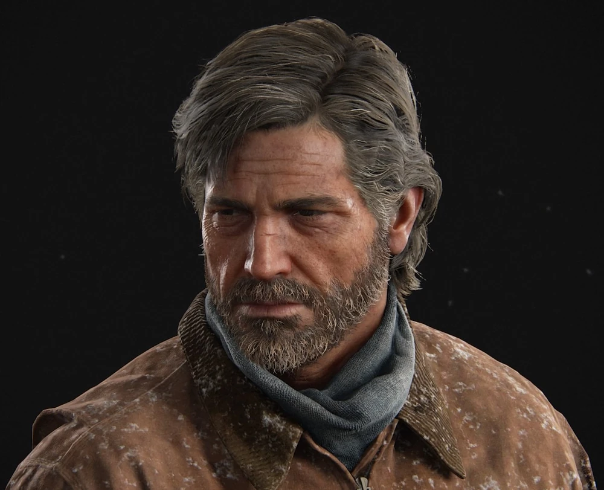
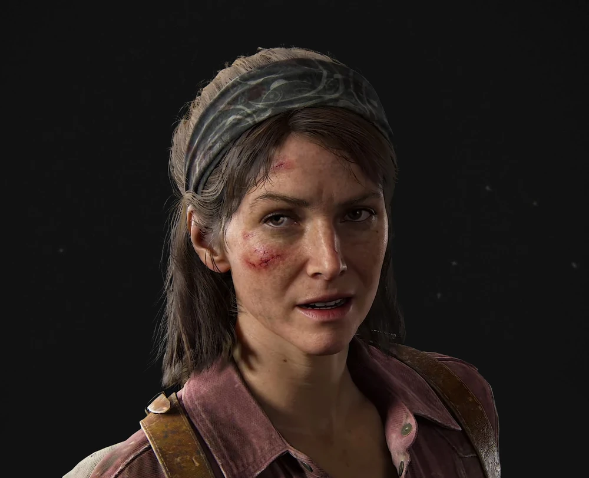

Plataformas
El juego "The Last Of Us" fue lanzada para diferentes Plataformas, PlayStation, Xbox y Pc, pero
nos enfocaremos principalmente en las Plataformas "PlayStation" el cual la primer edicion de este juego tuvo
diferentes Lanzamiento y algunos Remake's
Ps3
La primer edicion de The Last Of Us fue lanzada para Ps3 el 14/06/2013.
Ps4
El Remake de PS3 fue lanzada para PS4, su Lanzamiento fue 14 de Julio del 2014.
Ps5
El lanzamiento para PS5 es el mas reciente de la plataforma "PlaysStation" el cual fue el 2/09/2022
Chasqueadores
Un Chasqueador es la tercer etapa de los infectados, encontrándose en medio de los Acechadores y los Gordinflones (clima seco) o Tambaleantes (clima húmedo)
Una vez transcurrido un año después de la infección, los individuos avanzan a la etapa de chasqueadores.
En este momento, les crecen bultos de hongos por todo el cuerpo y los enceguecen. Para superar la ceguera,
los chasqueadores utilizan la ecolocalización para desplazarse y encontrar a sus presas,
y su fuerza superior los convierte en oponentes letales en espacios cerrados.
Saber mas
Personajes
En este VideoJuego, hay varios personajes, pero Te mostrare los 3 personajes principales de Este VideoJuego

Ellie Williams
Cuando conocemos a Ellie por primera vez, es una chica de 14 años que no conoció el mundo "normal"
anterior a 2013. Por lo tanto, Joel no se convierte solo en su transportador, sino también en un guía
para el mundo. Es precoz, ingeniosa y capaz. Ya sea con sus juegos de palabras o superando crisis,
su astucia e ingenio demuestran ser invaluables.

Joel Miller
Joel es un operador despiadado en el mercado negro subterráneo.
Independiente e ingenioso, se endureció tras una trágica pérdida.
A lo largo de su viaje, descubre la fuerza para convertirse en una figura paterna
para Ellie y luchar por un mejor futuro para ella y para él.

Tess Servopoulos
Fuerte, capaz y posiblemente más despiadada que su socio de contrabando,
Joel, Tess superó las dificultades del mundo brutal que la rodea para convertirse en
una hábil estratega y negociadora. Su liderazgo y destreza física la convirtieron
en una figura respetada en la zona de cuarentena de Boston.